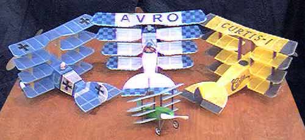
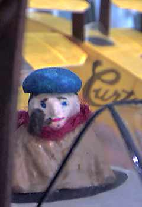
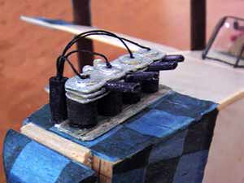

|
On the far left is Jason McGuire's original prototype. George Benson built the Avro version. Jerry Long couldn't resist creating the famed Curtis-1.
In the foreground is my own 6" version. |
|  |
With some bits and pieces from past models looking for a new home, George added a few embellishments. To the left is his intrepid pilot, enjoying a pipe while waiting for Jerry's Curtis pilot to mount up in the background. Below is the Avro engine, all warmed up.
 |
Another family photo
return to the Marin Aero Club Gallery or my larger RC version.
Copyright 1998-2015, Thayer Syme. All rights reserved